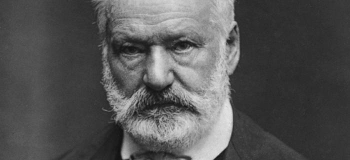

Victor Hugo
Poète, dramaturge, prosateur, romancier et dessinateur

Victor Hugo est un poète, romancier et dramaturge,
Victor Hugo est sans conteste l'un des géants de la littérature française.
Victor Hugo est sans conteste l'un des géants de la littérature française.
- 1871 Élu député de Paris, Hugo suit la Chambre à Bordeaux où il démissionne un mois après. Mort de son fils Charles. À la suite de ce décès, il se trouve à Bruxelles lors de la Commune, mais il en est expulsé pour avoir offert l’asile aux communards. Séjourne à Vianden puis revient à Paris où il s’installe 66, rue La Rochefoucauld. Victor Hugo va recevoir chez lui beaucoup de personnalités de la politique, de la littérature et des arts. Georges et Jeanne sont associés à tous les moments de son existence.
- 1872 Sa fille Adèle qui a sombrée dans la folie est ramenée en France et placée en maison de repos. Séjourne un an à Guernesey, jusqu’en juillet 1873, où il écrit son dernier roman Quatrevingt-treize. Publication de L’Année terrible.
- 1873 De retour à Paris, il s’installe villa Montmorency à Auteuil puis chez Juliette Drouet, 55, rue Pigalle. Reprise de Marion de Lorme à la Comédie-Française. Mort de son second fils François-Victor.
- 1874 Parution de Quatrevingt-treize et de Mes fils. Emménage 21 rue de Clichy
- 1875 Publication des premiers recueils de ses prises de ses interventions politiques, Actes et Paroles I et II.
- 1876 Élu sénateur, il intervient en faveur de l’amnistie des communards. Actes et paroles III.
- 1877 La veuve de Charles, Alice se remarie avec l’homme politique Édouard Lockroy, amis Hugo garde la tutelle de ses petits-enfants. Parution de L’Art d’être grand-père, L’Histoire d’un crime. Reprise d’Hernani à la Comédie française, avec Sarah Bernhardt.
- 1878 Publication du poème Le Pape. Dernier séjour à Guernesey, pour se reposer à la suite d’un incident cérébral. À son retour s’installe 130, avenue d’Eylau qui sera son dernier domicile.
- 1879 Publication de La Pitié suprême. Reprise de Ruy Blas qui entre au répertoire de la Comédie-Française.
- 1880 Publication de Religions et religion et de L’Âne. Célébration du cinquantenaire d’Hernani.
- 1881 Fête dite du 27 février 1881, célébrant l’entrée de Victor Hugo dans sa quatre-vingtième année. Des centaines de milliers de personnes défilent sous ses fenêtres pour lui rendre hommage. Publication des Quatre Vents de l'esprit. La portion de l’avenue d’Eylau où habite le poète est rebaptisée « avenue Victor Hugo ».
- 1882 Publication de la pièce de théâtre Torquemada. Est réélu au Sénat.
- 1883 Rencontre avec Rodin, qui désire faire son buste. Le 11 mai, mort de Juliette Drouet. L’Archipel de la Manche qui servira désormais de prologue aux Travailleurs de la mer.
- 1884 Hugo va voir la Statue de la Liberté dans l’atelier de Bartholdi. C’est sa dernière manifestation publique.
- 1885 Le 22 mai, mort de Victor Hugo. Le 1er juin, funérailles nationales et inhumation au Panthéon.
Biographie de Victor Hubo :
Le centenaire de sa naissance fut célébré avec éclat, il comporta entre autres cérémonies l'inauguration du monument élevé à sa gloire et l'inauguration du Musée Victor-Hugo installé dans la maison de la place des Vosges où le poète avait écrit d'immortels chefs-d'œuvre, alors qu'elle s'appelait Place Royale.
Il légua à la Bibliothèque nationale ses manuscrits et ses dessins.Si vous avez le temps, vous devriez en savoir plus sur cet incroyable être humain sur son wikipedia